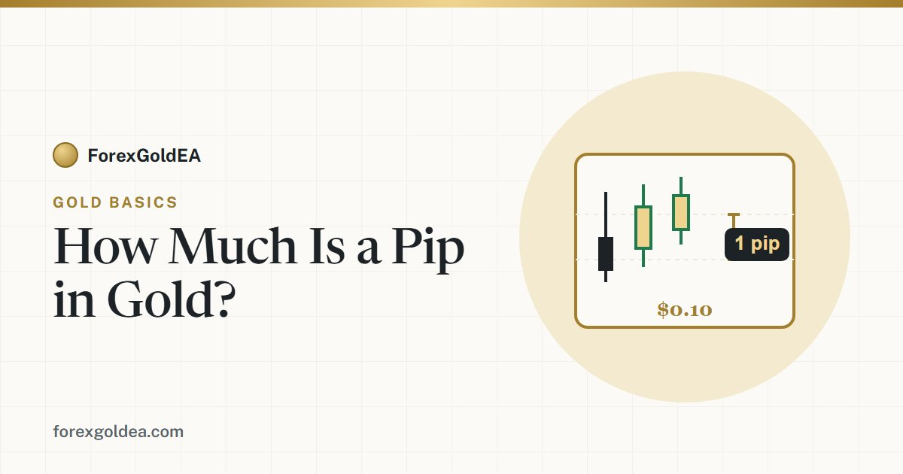

How Much Is a Pip in Gold?

"How much is a pip in gold?" sounds like a simple question, but it trips up almost every new XAU/USD trader — because gold does not follow the same pip rule as normal forex pairs, and because half the industry actually counts in points instead. This guide clears it up in plain numbers.
The short answer
On most brokers, a pip on XAU/USD is a $0.10 move in the gold price. What that pip is worth depends on your lot size:
Because one standard lot of gold is 100 ounces, that scales cleanly: a $0.10 pip is worth about $10 on a full lot, $1 on a mini lot, and $0.10 on the minimum micro lot.
Pip value at every lot size
| Lot size | Ounces | Value of 1 pip ($0.10 move) | Value of a $1.00 move |
|---|---|---|---|
| 1.00 (standard) | 100 oz | ~$10.00 | ~$100 |
| 0.10 (mini) | 10 oz | ~$1.00 | ~$10 |
| 0.01 (micro) | 1 oz | ~$0.10 | ~$1 |
The shortcut worth remembering: at 0.01 lots, a $1 move in gold is about $1 of profit or loss. Every other size just scales from there.
Pip vs point — the bit that confuses everyone
Here is the real source of confusion. Gold is quoted in dollars and cents, so brokers and platforms split the move up in two different ways:
- A pip is usually a $0.10 move.
- A point (sometimes called a cent or a "pipette") is a $0.01 move.
That means 1 pip = 10 points. So if one trader says gold moved "50 pips" and another says it moved "500 points", they are describing the exact same $5.00 move. Many gold EAs and MT4/MT5 setups count in points internally, which is why a stop-loss can read as "300" when you were thinking in pips.
Why it matters: mixing the two up is the fastest way to trade ten times too big or too small. Always know whether your number is in pips or points before you size a trade.
Why gold's pip is different from forex
On most forex pairs, a pip is the fourth decimal place — for EUR/USD, 1.1050 to 1.1051 is one pip (0.0001). Traders naturally assume gold works the same way. It does not.
Gold trades near four-figure prices (for example $2,400) and is quoted to two decimals, like $2,400.00. A "fourth-decimal" pip would be meaningless at that scale, so brokers instead define a gold pip as a $0.10 move. Same word, completely different size. This is exactly why a "20-pip" trade behaves so differently on gold than on EUR/USD — a point our guide on XAUUSD vs EUR/USD digs into.
Converting a stop-loss from pips to dollars
This is where pip value actually earns its keep. To turn a pip-based stop into real money:
- Pips → price distance: multiply the pips by $0.10. A 50-pip stop = a $5.00 move.
- Price distance → dollars: multiply by your lot size in ounces. At 0.02 lots (2 ounces), a $5.00 move = a $10 risk.
That risk figure is the number your position sizing should start from. If you want the math done for you, our gold pip calculator converts pips, points and dollar value for any lot size instantly, and the lot size calculator turns that risk into the correct trade size.
Watch out for these
- Broker definitions vary. Most use a $0.10 pip and 100-ounce lot, but not all. Check the XAUUSD contract specification in your platform before relying on any number.
- Points sneak in. If a value looks ten times too big or too small, you are almost certainly mixing pips and points.
- Cent accounts scale everything down. A "lot" on a cent account is not the same as on a standard account, so the pip value changes too.
- Spread is measured in the same units. A "20-point spread" on gold is a $0.20 cost — small per trade, but it adds up on an active EA.
How an EA handles pips for you
A well-built gold EA does this conversion silently on every trade. If it uses a risk-percent setting, it reads the stop distance (in price), converts it to money, and sizes the position so your loss matches the percentage you set — you never have to think in pips or points at all. That is the whole point of automation: the machine does the unit conversion that trips up humans. For how that fits with account size, see how much money you need to run a gold EA.
Want the numbers calculated for you?
Use our free gold pip calculator to convert pips, points and dollar value — or get ForexGoldEA and let it size every trade automatically.
Open the Pip Calculator Talk to us on Telegram →Frequently asked questions
How much is one pip in gold?
On most brokers a pip on XAU/USD is a $0.10 move. That is about $0.10 per pip at 0.01 lots, and about $10 per pip on one standard lot (100 ounces).
What is the difference between a pip and a point on gold?
A pip is usually a $0.10 move; a point is a $0.01 move. So 1 pip = 10 points. Many gold EAs count in points, which makes the numbers look ten times larger.
How much is a pip worth at 0.01 lots?
About $0.10 per pip, and a full $1.00 move in gold is worth about $1.00. It is the simplest size to reason about.
Is a gold pip the same as a forex pip?
No. On forex, a pip is the fourth decimal (0.0001). On gold, brokers commonly define a pip as a $0.10 move because gold is quoted in dollars and cents.
How do I convert a gold stop from pips to dollars?
Multiply pips by $0.10 for the price distance, then multiply by your lot size in ounces. A 50-pip stop at 0.02 lots is a $10 risk.
Risk disclosure: Trading foreign exchange and CFDs on margin, including gold (XAU/USD), carries a high level of risk and may not be suitable for every investor. You can lose some or all of your capital. Pip and point values in this article assume a standard 100-ounce contract with a $0.10 pip — always confirm the contract specification with your own broker. Figures are illustrative examples, not advice. ForexGoldEA is a trading tool, not financial advice.